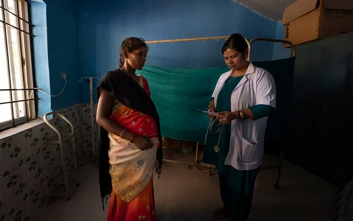
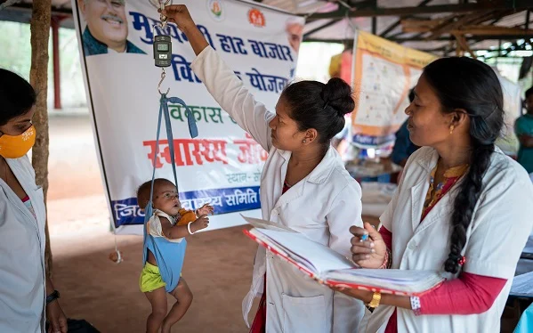
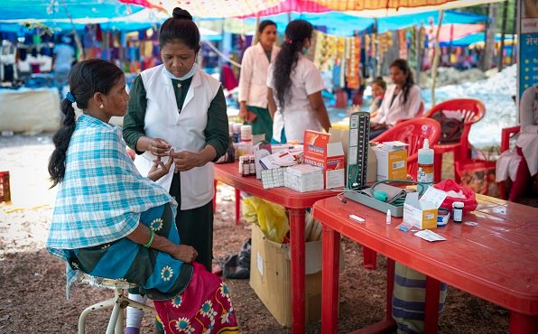

24 August 2022 | Dantewada, Chhattisgarh
A rural health officer conducts a routine antenatal care check-up in a designated room at Barsur Model Haat Bazaar Clinic in Dantewada district. The health consultation, medicines and essential vaccinations are provided free.

24 August 2022 | Narayanpur, Chhattisgarh
Health workers weigh a child at Sonpur Haat Bazaar Clinic to monitor the growth and development and identify early signs of malnutrition. Children with severe acute malnutrition (SAM) are referred to a Nutrition Rehabilitation Centre. Health workers also provide information and advice on breastfeeding and routine immunizations to mothers for their child’s healthy growth and development.

24 August 2022 | Bijapur, Chhattisgarh
A woman gets tested for malaria at Awapalli Haat Bazaar Clinic in Usoor, Bijapur district. Tribal communities living in forested areas are among the most vulnerable groups affected by malaria. Early detection and treatment is helping the region move towards Malaria-Mukt Bastar Abhiyan (Malaria-free Bastar Campaign) goals.